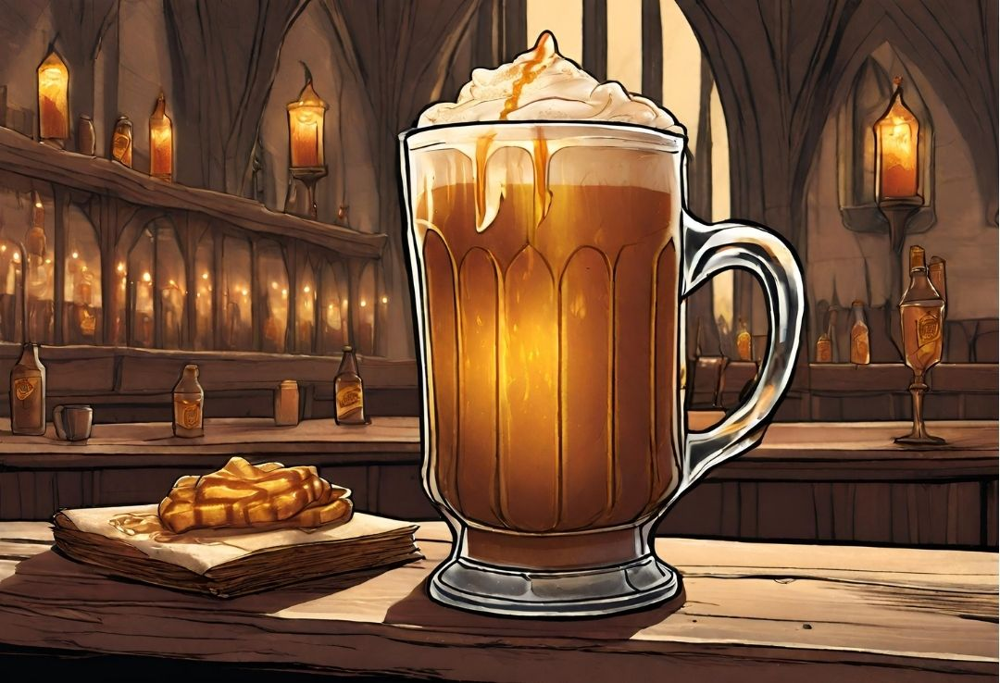

Harry Potter's Butterbeer

Description
Butterbeer, a beloved wizarding beverage in the Harry Potter universe, is renowned for its distinctive sweet and
slightly buttery flavor. Served in various forms, including hot, cold, and frozen, the drink boasts a frothy,
golden head akin to the foam atop a well-poured pint of beer. Found in magical establishments like The Three
Broomsticks Inn in Hogsmeade, Butterbeer is a favorite among wizards and witches. Its consumption is a
quintessential part of the Harry Potter experience, often enjoyed in the company of friends and fellow magical
folk.
In the real world, Butterbeer has been brought to life at Harry Potter-themed attractions, capturing the essence
of the fictional drink. The closely guarded recipe typically involves a combination of sweet flavors, cream
soda, and a frothy topping, creating a delightful beverage that mirrors the magical allure of J.K. Rowling's
wizarding world.
Ingredients
- 1 cup light or dark brown sugar
- 2 tablespoons water
- 6 tablespoons butter
- 1/2 teaspoon salt
- 1/2 teaspoon cider vinegar
- 3/4 cup heavy cream, divided
- 1/2 teaspoon rum extract
- 4 (12 oz) bottle cream soda
Steps
- In a small saucepan over medium heat, combine the brown sugar and water. Bring to a gentle boil and cook,
stirring often, until the mixture reads 240°F on a candy thermometer.
- Stir in the butter, salt, vinegar and 1/4 of the heavy cream. Set aside to cool to room temperature.
- Once the mixture has cooled, stir in the rum extract.
- In a medium bowl, combine 2 tablespoons of the brown sugar mixture and the remaining 1/2 cup of heavy cream.
Use an electric mixer to beat until just thickened, but not completely whipped, about 2 to 3 minutes.
- To serve: divide the brown sugar mixture between 4 tall glasses (about 1/4 cup for each glass). Add 1/4 cup
of cream soda to each glass, then stir to combine. Fill each glass nearly to the top with additional cream
soda, then spoon the whipped topping over each.